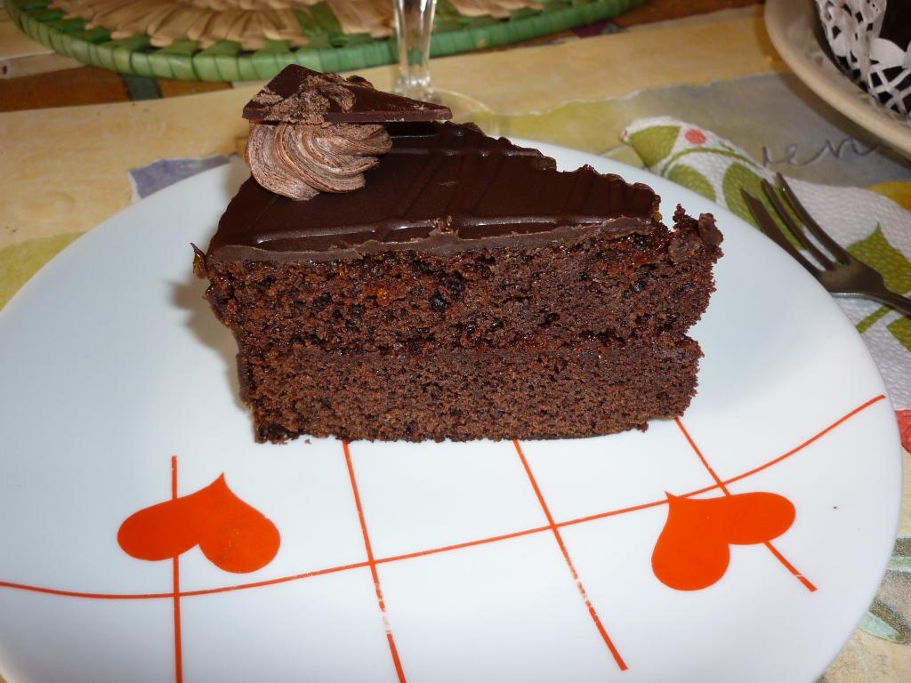

Egyszerű piskóta
Hozzávalók
- 3 tojás
- 100g porcukor
- 85g önkelő liszt
Megjegyzés a hozzávalókhoz
Porcukor
- Finomra darált fehér cukor.
Önkelő liszt
- Előre elkészített liszt és kelesztő keverék (általában hozzáadott sóval és élesztővel).
Elkészítés
- Melegítsük a sütőt 190°C-ra.
- Zsírozzunk be egy 20 cm-es kerek tortaformát.
- Egy közepes méretű tálban keverjük habosra a tojásokat és a porcukrot.
- Keverjük bele a lisztet.
- Öntsük bele a keveréket az előkészített tortaformába.
- Süssük 20 percig az előmelegített sütőben, amíg a tészta teteje könnyű nyomásra vissza nem ugrik.
- Hűtsük le a tortaformában az edényszárítón.